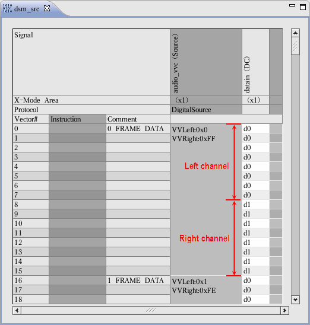
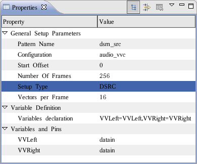

Viewing and editing content in the DSRC source pattern
If you select a DSRC pattern (label) as the data container when you define the Digital
Source setup, the source data is located in this DSRC pattern (see figure below). The software
will also generate comments (for example, #1 FRAME DATA) in the instruction area
to make reading the binary data easier. Note that when opening a DSRC pattern in the Pattern
Editor, the software will not allow you to insert any sequencer instructions.
You can use the Pattern Editor window to edit the content of source memory directly. But the software does not allow inserting/deleting lines of vectors from the source memory, because it could destroy the internal data storage.
The following figure shows the DSRC pattern (label) for the audio device after you download the waveform data. To make the pattern more readable, you can add the column for the Digital Source setup in the following step:
- Right-click the editor of the DSRC pattern and select Configure Layout.
- The Configure Layout window opens. Add the Digital Source setup item and click OK.
Now the Digital Source column appears in the DSRC pattern layout. It shows the scope of each frame and the data downloaded to the vector variables. You can directly modify the downloaded data on this column. For each variable, you can enter the hexadecimal value with a leading 0x for example, 0xFF), or decimal value, or octal value with a leading 0 for example, 011 for octal 11).

After you click the Digital Source column, the attributes of the setup are shown in the Properties view. You can directly modify the Number of Frames and Variables declaration fields in this view.

Functional changes
- Introduced before SmarTest 6.3.2